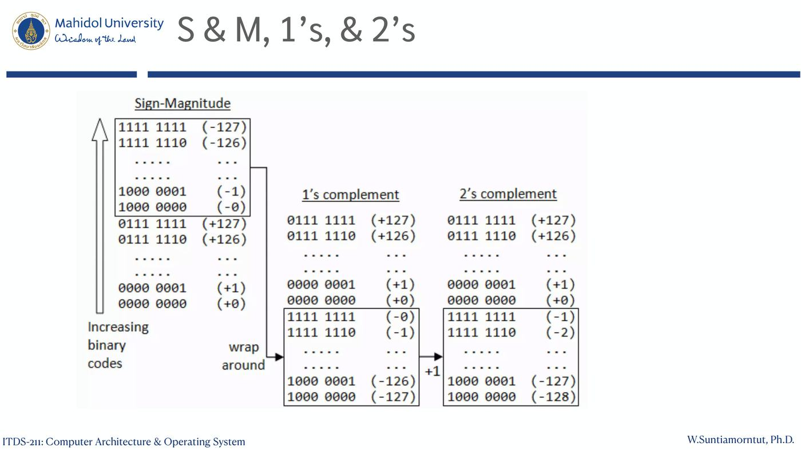

ภาพรวมบทนี้: บทนี้แบ่งเป็น 2 ครึ่ง ครึ่งแรก — Data Representation: คอมพิวเตอร์เก็บตัวเลขและตัวอักษรเป็น bit อย่างไร: unsigned, signed (Sign & Magnitude, 1's / 2's complement, Bias), floating point (IEEE 754) และตัวอักษร (ASCII, Unicode) ครึ่งหลัง — ISA & Assembly (RISC-V): คำสั่งเครื่องของ RISC-V: register, memory operand, รูปแบบคำสั่ง R/I/S, logical/shift, branch, การเรียก procedure และ stack
สไลด์ระบุว่า PART II (สไลด์ 84 เป็นต้นไป) เป็น Self-study ให้นักศึกษาศึกษาเอง
สารบัญ
ส่วน A — Data Representation
- Data Representation ในคอมพิวเตอร์
- Number Systems และ Quantitative Numbers
- Signed Integers: Sign & Magnitude
- Complement Method: 1's และ 2's complement
- Bias Notation
- Floating Point และ IEEE 754
- Character Representation และ ASCII
- Assignment 2
ส่วน B — PART I: Assembly & ISA (RISC-V) 9. Instruction Set และ RISC-V 10. Arithmetic Operations และ Register Operands 11. Memory Operands และ Endian 12. Immediate Operands และ RISC-V Numbers 13. Representing Instructions: R / I / S format 14. Stored Program Computers 15. Logical และ Shift Operations 16. Conditional Operations, If, Loop, Basic Blocks 17. Procedure Calling, Stack และ Register Usage 18. Memory Layout, Character Data, Byte/Halfword/Word
ส่วน C — PART II: Self-study 19. String Copy, 32-bit Constants, Branch/Jump Addressing 20. Addressing & Encoding Summary 21. Synchronization 22. Translation and Startup (linking, loading, Java) 23. C Sort Example 24. Compiler Optimization, Arrays vs Pointers 25. MIPS และ RISC-V ส่วนอื่น ๆ
ส่วน A — Data Representation
1. Data Representation ในคอมพิวเตอร์ (สไลด์ 4–6)
หัวข้อของส่วนนี้ (สไลด์ 4):
- Representing numbers: Unsigned, Signed, Floating point
- Representing characters & symbols: ASCII, Unicode
สไลด์ 5:
- ข้อมูลถูกเก็บใน registers
- Registers มี จำนวนและขนาดจำกัด
- register ขนาด n bit (bit n−1 ถึง 0) → ค่าต่ำสุด = 0, ค่าสูงสุด = 2ⁿ − 1
สไลด์ 6 — การแบ่งประเภทข้อมูล:
- Data แบ่งเป็น
- Quantitative (เชิงปริมาณ)
- Integers → Signed / Unsigned
- Non-integers → Signed / Unsigned
- Qualitative (เชิงคุณภาพ)
- Quantitative (เชิงปริมาณ)
2. Number Systems และ Quantitative Numbers (สไลด์ 7–8)
| ระบบเลข | สัญลักษณ์ |
|---|---|
| Decimal | 0–9 |
| Binary | 0, 1 |
| Octal | 0–7 |
| Hexadecimal | 0–9, A, B, C, D, E, F |
Quantitative Numbers:
- Integers: Unsigned เช่น 20 | Signed เช่น +20, −20
- Non-integers: Floating point numbers เช่น 10.25, 3.33333…, 1/8 = 0.125
3. Signed Integers และ Sign & Magnitude (สไลด์ 9–12)
ทำไมต้องมี signed integer? ต้องมีวิธีแทน ค่าติดลบ สไลด์ให้ 3 วิธี:
- Sign & Magnitude (S&M)
- Complement method
- Bias notation (Excess notation)
3.1 Sign & Magnitude (สไลด์ 10)
- ใช้ sign bit (S) 1 ตัว + magnitude แบบ unsigned n bit
- S = 0 → ค่าบวกหรือศูนย์ | S = 1 → ค่าลบหรือศูนย์
- Range: −(2ⁿ − 1) ถึง +(2ⁿ − 1) (n = จำนวน bit ของ magnitude)
3.2 ตัวอย่าง (สไลด์ 11)
- ถ้าใช้ register 8 bit ค่าต่ำสุดและสูงสุดคือเท่าไร? (ตารางในสไลด์ 22 แสดงช่วง S&M 8 bit = −127 ถึง +127)
- 0000 0000 และ 1000 0000 คือเท่าไรในฐานสิบ? → ทั้งคู่เป็นศูนย์ (+0 และ −0) → การแทนศูนย์ไม่ unique
3.3 ข้อดี / ข้อเสีย (สไลด์ 12)
| ข้อดี | ข้อเสีย |
|---|---|
| กลับเครื่องหมายง่าย (sign reversal) | การบวกค่าลบ ไม่เหมือน การลบ เช่น บวก 2 กับ −3 ต้องใช้ operation ต่างกัน |
| หาค่าสัมบูรณ์ |a| ง่าย แค่ flip sign bit | ศูนย์ไม่ unique |
4. Complement Method (สไลด์ 13–22)
4.1 นิยาม (สไลด์ 13–14)
- Base = Radix: ระบบฐาน r คือมีสัญลักษณ์ r ตัว เช่น binary มี 0, 1
- มี 2 แบบ: r's complement และ (r − 1)'s complement
- Decimal → 9's & 10's complement
- Binary → 1's & 2's complement
ให้ m เป็นเลขฐาน r มี n หลัก:
(r − 1)'s complement ของ m = (rⁿ − 1) − m
r's complement ของ m = (rⁿ − 1) − m + 1 = rⁿ − m
4.2 ตัวอย่าง (สไลด์ 15)
- n = 3 (มี 3 หลัก), m = 382
- สไลด์เขียนว่า: "1' complement (−382) = 617" และ "2' complement (−382) = 618"
⚠️ m = 382 เป็นเลขฐานสิบ ตามนิยามในสไลด์ 13 ควรเรียกว่า 9's complement = 617 และ 10's complement = 618 (999 − 382 = 617, 1000 − 382 = 618) — สไลด์ใช้ชื่อ 1'/2' ซึ่งเป็นชื่อของฐานสอง
4.3 1's complement (สไลด์ 16)
- คำนวณโดย (2ⁿ − 1) − m หรือ กลับทุก bit (invert) ของ m
- ตัวอย่าง: m = 0101 ในระบบ 4 bit → 1111 − 0101 = 1010 = −5 ใน 1's complement
- m = 00101011 → 1's complement = 11010100
- m = 00000000 (= 0) → 1's complement = 11111111 (= −0)
- ช่วงค่า (8 bit): −127 ถึง +127
4.4 Addition with 1's Complement (สไลด์ 17)
- ถ้าผลลัพธ์มี carry ให้นำไปบวกที่ LSB (end-around carry)
- ตัวอย่างในสไลด์ (ระบบ 3 bit): 6 = 110, −3 = 100 → 110 + 100 = 1010 → นำ carry 1 ไปบวก LSB → 011
4.5 2's Complement (สไลด์ 18–20)
- ไม่ต้อง end-around carry แบบ 1's complement
- สร้างโดย: หา 1's complement แล้ว +1 ที่ LSB
- ช่วงใหม่ (8 bit): −128 ถึง +127 — ได้ −128 เพิ่มมาเพราะการ +1 ให้ค่าลบ
ตัวอย่าง (สไลด์ 19): หา 2's complement ของ 0101011
- m = 0101011 → 1's = 1010100 → +1 → 1010101
- Short-cut: (1) หา bit แรกที่เป็น 1 โดยเริ่มจาก LSB (2) กลับทุก bit ที่อยู่ถัดจาก 1 ตัวแรกนั้น
ตัวอย่างบวก (สไลด์ 20): บวก 6 กับ −5 ในระบบ 4 bit
- 5 = 0101 → −5 = 1011
- 0110 + 1011 = 1 0001 → ทิ้ง (discard) carry → 0001 (= 1)
4.6 1's vs 2's Complement (สไลด์ 21)
| 1's complement | 2's complement |
|---|---|
| มีศูนย์ 2 ตัว (+0, −0) | มีศูนย์ตัวเดียว |
| ช่วงค่าน้อยกว่า 2's | ช่วงค่าไม่เท่ากันสองฝั่ง |
ข้อดีของ complement:
- ไม่ต้องมีวงจรลบแยก — ทำ NOT ถูกกว่ามากในแง่การออกแบบวงจร
- แต่ การคูณและหารช้า
4.7 ตารางเทียบ S&M, 1's, 2's (8 bit) (สไลด์ 22)
| Bit pattern | Sign-Magnitude | 1's complement | 2's complement |
|---|---|---|---|
| 0000 0000 | +0 | +0 | +0 |
| 0000 0001 | +1 | +1 | +1 |
| 0111 1111 | +127 | +127 | +127 |
| 1000 0000 | −0 | −127 | −128 |
| 1000 0001 | −1 | −126 | −127 |
| 1111 1110 | −126 | −1 | −2 |
| 1111 1111 | −127 | −0 | −1 |

💡 ค่าบวกเหมือนกันทั้ง 3 แบบ ต่างกันแค่ฝั่งที่ bit ซ้ายสุดเป็น 1
5. Bias Notation (สไลด์ 23–24)
- ช่วงตัวเลขถูกบวกด้วย bias บวก เพื่อให้ค่า unsigned ที่เล็กที่สุดเท่ากับ −B
- ถ้า bias = B → ค่า B ในช่วงตัวเลขจะกลายเป็น ศูนย์
- ค่า = Σ bᵢ2ⁱ − B
- Bias = 127 สำหรับ 8 bit → ช่วง −127 (0 − 127) ถึง 128 (255 − 127)
| Bit pattern | Unsigned | Biased-127 |
|---|---|---|
| 0000 0000 | +0 | −127 |
| 0000 0001 | +1 | −126 |
| 0000 0010 | +2 | −125 |
| 0111 1110 | +126 | −1 |
| 0111 1111 | +127 | +0 |
| 1000 0000 | +128 | +1 |
| 1111 1111 | +255 | +128 |
💡 ค่า biased = ค่า unsigned − 127
6. Floating Point Numbers และ IEEE 754 (สไลด์ 25–31)
6.1 ทำไมต้องมี floating point (สไลด์ 25–26)
- ต้องการแทน ค่าทศนิยม และ ค่าที่ใหญ่เกิน 2ⁿ − 1
- +3207.23 = 3.20723 × 10³
- −0.000321 = −3.21 × 10⁻⁴ → ส่วนประกอบ: Sign (−), Mantissa (3.21), Radix/base (10), Exponent (−4)
- รูปทั่วไป: N = (−1)ˢ × m × 2ᵉ — เก็บเป็น sign | exponent | mantissa
6.2 IEEE Floating Point Standard (สไลด์ 27–28)
| Single precision | Double precision | |
|---|---|---|
| ขนาด | 32 bits | 64 bits |
| Sign | 1 bit (bit 31) | 1 bit (bit 63) |
| Exponent | 8 bits (bit 30–23) | 11 bits (bit 62–52) |
| Mantissa | 23 bits (bit 22–0) | 52 bits (bit 51–0) |
สูตร single precision:
N = (−1)ˢ × [1.m] × 2^(E − 127)
E − 127 = e → E = e + 127
สิ่งที่เก็บจริงคือ E
6.3 Single Precision (สไลด์ 29)
- 23-bit mantissa: m อยู่ในช่วง 1 ถึง (2 − 2⁻²³)
- 8-bit exponent:
- E อยู่ในช่วง 1 ถึง 254
- 0 และ 255 สงวนไว้ แทน −∞, +∞, NaN
- e อยู่ในช่วง −126 ถึง +127
- ค่าสูงสุดที่แทนได้: 2 × 2¹²⁷ = 2¹²⁸
6.4 Binary Fractions (สไลด์ 30)
101.1101₂ เป็นฐานสิบ: 2²×1 + 2¹×0 + 2⁰×1 + 2⁻¹×1 + 2⁻²×1 + 2⁻³×0 + 2⁻⁴×1 = 4 + 1 + 0.5 + 0.25 + 0.0625 = 5.8125
5.8125₁₀ เป็นฐานสอง:
- ส่วนจำนวนเต็ม: 5 = 101
- ส่วนทศนิยม: คูณ 2 ไปเรื่อย ๆ จนได้ 1
- 0.8125 × 2 = 1.625
- 0.625 × 2 = 1.25
- 0.25 × 2 = 0.5
- 0.5 × 2 = 1.0
- → 0.8125₁₀ = .1101₂
- ดังนั้น 5.8125 = 101.1101₂
6.5 ตัวอย่าง Single Precision: 17.15₁₀ (สไลด์ 31)
- 17.15₁₀ = 10001.0010011₂ = 1.00010010011 × 2⁴
- E = e + 127 = 4 + 127 = 131 = 1000 0011
- ผลลัพธ์: Sign = 0 | Exponent = 1000 0011 | Mantissa = 0001 0010 0110 0000 ……
⚠️ mantissa เก็บเฉพาะส่วนหลังจุด (ไม่เก็บเลข 1 หน้าจุด) ตามสูตร [1.m]
7. Character Representation และ ASCII (สไลด์ 32–37)
7.1 Character Representation (สไลด์ 32–33)
- อยู่ในกลุ่ม qualitative data แทนคุณภาพหรือลักษณะ
- ประกอบด้วย: Letters (a-z, A-Z), Digits (0-9), Symbols (!, @, *, /, &, #, $), Control characters (
, , , ) - 1 byte (8 bits) แทนได้ 256 ตัวอักษร
- มาตรฐาน: ASCII (American Standard Code for Information Interchange), EBCDIC (Extended Binary-Coded Decimal Interchange Code), Unicode
7.2 ASCII (สไลด์ 34)
- เป็นมาตรฐานโลกโดยพฤตินัย (de facto world-wide standard)
- ใช้แทน: ตัวอักษรละตินพิมพ์ใหญ่/เล็ก, ตัวเลข, เครื่องหมายวรรคตอน, control characters
- มี 128 รหัสมาตรฐาน แทนด้วยเลขฐานสอง 7 หลัก (000 0000 ถึง 111 1111) บวก parity bit
7.3 ASCII Table (สไลด์ 35–36) — ค่าที่ควรจำ
| ช่วง ASCII (dec) | Hex | ตัวอักษร |
|---|---|---|
| 0–15 | 0–F | control: NUL, SOH, STX, ETX, EOT, ENQ, ACK, BEL, BS, TAB, LF, VT, FF, CR, SO, SI |
| 32 | 20 | (space) |
| 33–47 | 21–2F | ! " # $ % & ' ( ) * + , - . / |
| 48–57 | 30–39 | '0'–'9' |
| 58–64 | 3A–40 | : ; < = > ? @ |
| 65–90 | 41–5A | A–Z |
| 91–96 | 5B–60 | [ \ ] ^ _ ` |
| 97–122 | 61–7A | a–z (ตารางในสไลด์แสดงถึง 111 = 'o') |
7.4 ASCII — Things to Note (สไลด์ 37)
- รหัส ASCII ของตัวเลขไม่เท่ากับค่าตัวเลข (เช่น '0' = 48)
- ตัวพิมพ์ใหญ่และเล็ก ต่างกัน 0x20
- Shift key clear bit 5
- 0x20 = 32 = 0010 0000
- ตัวอย่าง: A = 65 = 0100 0001, a = 97 = 0110 0001
- ภาษาส่วนใหญ่ต้องการมากกว่า 128 ตัวอักษร
8. Assignment 2 — ใบงานที่ 2 (สไลด์ 38)
- งานกลุ่ม กลุ่มละ 2 คน
- ใช้เลขฐาน 2 กำหนดให้มี 16 บิต แทนตัวเลข
- ทีมกำหนดตัวตั้งและตัวกระทำเองได้
- แสดงขั้นตอนการคำนวณ "add" และ "sub" ด้วย data representation 2 แบบ: 1) sign magnitude 2) two's complement
- Upload งานทุกคน ส่งใน MyCourse
- Section 1: deadline 23.59 น. วันอาทิตย์ที่ 23 สิงหาคม 2569
- Section 2: deadline 23.59 น. วันอังคารที่ 25 สิงหาคม 2569
ส่วน B — PART I: Assembly & ISA (RISC-V)
9. Instruction Set และ RISC-V (สไลด์ 39–42)
Instruction Set Overview:
- คอมพิวเตอร์ต่างกันมี instruction set ต่างกัน
- คอมพิวเตอร์ยุคแรกมี instruction set ง่ายมาก → implement ง่าย
- คอมพิวเตอร์สมัยใหม่หลายเครื่องก็มี instruction set ง่ายเช่นกัน
RISC-V Instruction Set:
- พัฒนาที่ UC Berkeley เป็น open ISA
- ปัจจุบันดูแลโดย RISC-V Foundation (riscv.org)
- เป็นแบบฉบับของ ISA สมัยใหม่จำนวนมาก (ดู RISC-V Reference Data tear-out card)
- ISA คล้าย ๆ กันมีส่วนแบ่งใหญ่ในตลาด embedded core
- ใช้ใน consumer electronics, network/storage equipment, cameras, printers, …
10. Arithmetic Operations และ Register Operands (สไลด์ 43–47)
10.1 Arithmetic Operations (สไลด์ 43–44)
- บวกและลบมี 3 operands: 2 sources + 1 destination
add a, b, c // a gets b + c
- คำสั่งเลขคณิตทุกคำสั่งมีรูปแบบนี้
- Design Principle 1: Simplicity favours regularity
- ความสม่ำเสมอทำให้ implement ง่ายขึ้น
- ความง่ายทำให้ performance สูงขึ้นที่ต้นทุนต่ำลง
ตัวอย่าง: C: f = (g + h) - (i + j);
add t0, g, h // temp t0 = g + h
add t1, i, j // temp t1 = i + j
add f, t0, t1 // f = t0 - t1
⚠️ บรรทัดสุดท้ายในสไลด์เขียน
addแต่ comment บอกf = t0 - t1— ตัวอย่างในสไลด์ 47 ใช้subสำหรับขั้นนี้
10.2 Register Operands (สไลด์ 45)
- คำสั่งเลขคณิตใช้ register operands
- RISC-V มี register file 32 × 64-bit
- ใช้กับข้อมูลที่เข้าถึงบ่อย
- ข้อมูล 64 bit เรียกว่า "doubleword"
- สไลด์เขียน "32 x 64-bit general purpose registers x0 to x30"
- ข้อมูล 32 bit เรียกว่า "word"
- Design Principle 2: Smaller is faster (เทียบกับ main memory ที่มีหลายล้านตำแหน่ง)
⚠️ สไลด์บอกว่ามี 32 registers แต่เขียนช่วงเป็น x0 to x30 ส่วนสไลด์ 46 ใช้ถึง x31
10.3 RISC-V Registers (สไลด์ 46)
| Register | หน้าที่ |
|---|---|
| x0 | ค่าคงที่ 0 |
| x1 | return address |
| x2 | stack pointer |
| x3 | global pointer |
| x4 | thread pointer |
| x5–x7, x28–x31 | temporaries |
| x8 | frame pointer |
| x9, x18–x27 | saved registers |
| x10–x11 | function arguments/results |
| x12–x17 | function arguments |
10.4 Register Operand Example (สไลด์ 47)
C: f = (g + h) - (i + j); โดย f, …, j อยู่ใน x19, x20, …, x23
add x5, x20, x21
add x6, x22, x23
sub x19, x5, x6
11. Memory Operands และ Endian (สไลด์ 48–51)
11.1 Endian (สไลด์ 48)
- Big-endian: byte address 00 เก็บ byte ที่มีนัยสำคัญสูงสุดก่อน (เรียง 00 01 02 03 … จากซ้าย)
- Little-endian: เรียงกลับกัน (… 03 02 01 00)
11.2 Memory Operands (สไลด์ 49)
- Main memory ใช้กับ composite data — arrays, structures, dynamic data
- จะคำนวณต้อง load ค่าจาก memory เข้า register แล้ว store ผลกลับ memory
- Memory is byte addressed — แต่ละ address ระบุ 1 byte (8 bit)
- RISC-V เป็น Little Endian
- byte ที่มีนัยสำคัญน้อยที่สุดอยู่ที่ address ต่ำสุดของ word
- เทียบ Big Endian: byte ที่มีนัยสำคัญมากที่สุดอยู่ที่ address ต่ำสุด
- RISC-V ไม่บังคับให้ word ต้อง aligned ใน memory (ต่างจากบาง ISA)
11.3 Memory Operand Example (สไลด์ 50)
C: A[12] = h + A[8]; โดย h อยู่ใน x21, base address ของ A อยู่ใน x22
- Index 8 ต้องใช้ offset 64 (8 bytes ต่อ doubleword)
ld x9, 64(x22)
add x9, x21, x9
sd x9, 96(x22)
💡 offset = index × 8 → A[8] = 64, A[12] = 96
11.4 Registers vs Memory (สไลด์ 51)
- Register เข้าถึง เร็วกว่า memory
- ทำงานกับข้อมูลใน memory ต้อง load และ store → ต้องรันคำสั่งมากขึ้น
- Compiler ต้องใช้ register เก็บตัวแปรให้มากที่สุด
- spill ลง memory เฉพาะตัวแปรที่ใช้ไม่บ่อย
- Register optimization สำคัญ!
12. Immediate Operands และ RISC-V Numbers (สไลด์ 52–53)
12.1 Immediate Operands (สไลด์ 52)
- ข้อมูลค่าคงที่ระบุในคำสั่งโดยตรง:
addi x22, x22, 4 - Make the common case fast: ค่าคงที่เล็ก ๆ พบบ่อย → immediate operand ไม่ต้องมีคำสั่ง load
12.2 RISC-V: Numbers (สไลด์ 53)
- Unsigned binary integers: ช่วง 0 ถึง +2ⁿ − 1
- 2's-complement signed integers: ช่วง −2ⁿ⁻¹ ถึง +2ⁿ⁻¹ − 1
- Signed negation: complement แล้วบวก 1
- ตัวอย่าง negate +2: +2 = 0000 0000 … 0010₂ → −2 = 1111 1111 … 1101₂ + 1 = 1111 1111 … 1110₂
- Sign extension ใน RISC-V:
lb: sign-extend byte ที่ load มาlbu: zero-extend byte ที่ load มา
13. Representing Instructions (สไลด์ 54–58)
13.1 หลักการ (สไลด์ 54)
- คำสั่งถูกเข้ารหัสเป็น binary เรียกว่า machine code
- คำสั่ง RISC-V เข้ารหัสเป็น 32-bit instruction words
- มีรูปแบบ (format) จำนวนน้อย เข้ารหัส opcode, register numbers, … → Regularity!
13.2 R-format (สไลด์ 55–56)
| funct7 | rs2 | rs1 | funct3 | rd | opcode |
|---|---|---|---|---|---|
| 7 bits | 5 bits | 5 bits | 3 bits | 5 bits | 7 bits |
| Field | ความหมาย |
|---|---|
| opcode | operation code |
| rd | หมายเลข destination register |
| funct3 | function code 3 bit (opcode เพิ่มเติม) |
| rs1 | หมายเลข source register ตัวที่ 1 |
| rs2 | หมายเลข source register ตัวที่ 2 |
| funct7 | function code 7 bit (opcode เพิ่มเติม) |
ตัวอย่าง add x9, x20, x21:
| funct7 | rs2 | rs1 | funct3 | rd | opcode |
|---|---|---|---|---|---|
| 0 | 21 | 20 | 0 | 9 | 51 |
| 0000000 | 10101 | 10100 | 000 | 01001 | 0110011 |
→ 0000 0001 0101 1010 0000 0100 1011 0011₂ = 015A04B3₁₆
⚠️ rs2 อยู่ ซ้าย ของ rs1 ในรูปแบบคำสั่ง แต่ในภาษา assembly เขียน rs1 ก่อน
13.3 I-format (สไลด์ 57)
| immediate | rs1 | funct3 | rd | opcode |
|---|---|---|---|---|
| 12 bits | 5 bits | 3 bits | 5 bits | 7 bits |
- ใช้กับคำสั่ง immediate arithmetic และ load
- rs1: source หรือ base address register
- immediate: operand ค่าคงที่ หรือ offset ที่บวกกับ base address (2's complement, sign extended)
- Design Principle 3: Good design demands good compromises
- หลาย format ทำให้ decode ยากขึ้น แต่ทำให้ทุกคำสั่งยาว 32 bit เท่ากัน
- ให้ format คล้ายกันมากที่สุด
13.4 S-format (สไลด์ 58)
| imm[11:5] | rs2 | rs1 | funct3 | imm[4:0] | opcode |
|---|---|---|---|---|---|
| 7 bits | 5 bits | 5 bits | 3 bits | 5 bits | 7 bits |
- รูปแบบ immediate ต่างออกไปสำหรับคำสั่ง store
- rs1: base address register
- rs2: source operand register
- immediate: offset ที่บวกกับ base address — แยกเป็น 2 ส่วน เพื่อให้ field rs1 และ rs2 อยู่ตำแหน่งเดิมเสมอ
14. Stored Program Computers — The BIG Picture (สไลด์ 59)
- คำสั่งแทนด้วย binary เหมือนข้อมูล
- คำสั่งและข้อมูลเก็บใน memory
- โปรแกรมทำงานกับโปรแกรมได้ เช่น compilers, linkers, …
- Binary compatibility ทำให้โปรแกรมที่ compile แล้วรันบนคอมพิวเตอร์ต่างเครื่องได้ → Standardized ISAs
- ภาพ: memory เก็บ Accounting program, Editor program, C compiler (machine code), Payroll data, Book text, Source code in C
15. Logical และ Shift Operations (สไลด์ 60–64)
15.1 Logical Operations (สไลด์ 60)
คำสั่งจัดการระดับ bit — มีประโยชน์ในการดึงหรือใส่กลุ่ม bit ใน word
| Operation | C | Java | RISC-V |
|---|---|---|---|
| Shift left | << | << | slli |
| Shift right | >> | >>> | srli |
| Bit-by-bit AND | & | & | and, andi |
| Bit-by-bit OR | | | | | or, ori |
| Bit-by-bit XOR | ^ | ^ | xor, xori |
| Bit-by-bit NOT | ~ | ~ | (ไม่มีคำสั่งในตาราง) |
15.2 Shift Operations (สไลด์ 61)
| funct6 | immed | rs1 | funct3 | rd | opcode |
|---|---|---|---|---|---|
| 6 bits | 6 bits | 5 bits | 3 bits | 5 bits | 7 bits |
- immed: shift กี่ตำแหน่ง
- Shift left logical: เลื่อนซ้ายแล้วเติม 0 —
sllii bits = คูณ 2ⁱ - Shift right logical: เลื่อนขวาแล้วเติม 0 —
srlii bits = หาร 2ⁱ (unsigned เท่านั้น)
15.3 AND / OR / XOR (สไลด์ 62–64)
| คำสั่ง | ใช้ทำอะไร | ตัวอย่างในสไลด์ (byte ท้าย) |
|---|---|---|
and x9,x10,x11 |
mask bits — เลือกบาง bit ล้างที่เหลือเป็น 0 | x10 = …00001101 11000000, x11 = …00111100 00000000 → x9 = …00001100 00000000 |
or x9,x10,x11 |
include bits — ตั้งบาง bit เป็น 1 ที่เหลือคงเดิม | → x9 = …00111101 11000000 |
xor x9,x10,x12 |
differencing — ใช้ทำ NOT (x12 = 1 ทุก bit) | → x9 = 1111…11110010 00111111 |
⚠️ สไลด์ XOR เขียนคำอธิบายย่อยว่า "Set some bits to 1, leave others unchanged" ซ้ำกับของ OR
16. Conditional Operations (สไลด์ 65–70)
16.1 beq / bne (สไลด์ 65)
- กระโดดไปคำสั่งที่มี label ถ้าเงื่อนไขเป็นจริง ไม่งั้นทำต่อตามลำดับ
beq rs1, rs2, L1— if (rs1 == rs2) ไป L1bne rs1, rs2, L1— if (rs1 != rs2) ไป L1
16.2 Compiling If Statements (สไลด์ 66)
C: if (i==j) f = g+h; else f = g-h; โดย f, g, … อยู่ใน x19, x20, …
bne x22, x23, Else
add x19, x20, x21
beq x0, x0, Exit // unconditional
Else: sub x19, x20, x21
Exit: … // Assembler calculates addresses
💡
beq x0, x0, Exitเป็นจริงเสมอ จึงใช้เป็นการกระโดดแบบไม่มีเงื่อนไข
16.3 Compiling Loop Statements (สไลด์ 67)
C: while (save[i] == k) i += 1; โดย i ใน x22, k ใน x24, address ของ save ใน x25
Loop: slli x10, x22, 3
add x10, x10, x25
ld x9, 0(x10)
bne x9, x24, Exit
addi x22, x22, 1
beq x0, x0, Loop
Exit: …
16.4 Basic Blocks (สไลด์ 68)
- Basic block = ลำดับคำสั่งที่
- ไม่มี branch ฝังอยู่ (ยกเว้นตอนท้าย)
- ไม่มี branch target (ยกเว้นตอนต้น)
- Compiler ระบุ basic blocks เพื่อ optimize
- Processor ขั้นสูงเร่งการทำงานของ basic blocks ได้
16.5 More Conditional Operations (สไลด์ 69)
blt rs1, rs2, L1— if (rs1 < rs2) ไป L1bge rs1, rs2, L1— if (rs1 >= rs2) ไป L1- ตัวอย่าง:
if (a > b) a += 1;โดย a ใน x22, b ใน x23
bge x23, x22, Exit // branch if b >= a
addi x22, x22, 1
Exit:
16.6 Signed vs Unsigned (สไลด์ 70)
- Signed comparison: blt, bge | Unsigned comparison: bltu, bgeu
- ตัวอย่าง: x22 = 1111 … 1111, x23 = 0000 … 0001
x22 < x23(signed) → −1 < +1x22 > x23(unsigned) → +4,294,967,295 > +1
17. Procedure Calling (สไลด์ 71–79)
17.1 ขั้นตอน (สไลด์ 71)
- วาง parameters ใน registers x10 ถึง x17
- โอนการควบคุมไปยัง procedure
- จองที่เก็บสำหรับ procedure
- ทำงานของ procedure
- วางผลลัพธ์ใน register ให้ผู้เรียก
- กลับไปที่จุดเรียก (address อยู่ใน x1)
17.2 Procedure Call Instructions (สไลด์ 72)
- Procedure call: jump and link —
jal x1, ProcedureLabel- ใส่ address ของคำสั่งถัดไปลงใน x1
- กระโดดไป target address
- Procedure return: jump and link register —
jalr x0, 0(x1)- เหมือน jal แต่กระโดดไปที่ 0 + address ใน x1
- ใช้ x0 เป็น rd (x0 เปลี่ยนค่าไม่ได้)
- ใช้กับ computed jumps ได้ด้วย เช่น case/switch
17.3 Leaf Procedure Example (สไลด์ 73–75)
Leaf procedure = ฟังก์ชันที่ไม่มีการ call ออกไปหาฟังก์ชันอื่น
C:
long long int leaf_example (long long int g, long long int h,
long long int i, long long int j) {
long long int f;
f = (g + h) - (i + j);
return f;
}
- Arguments g, …, j ใน x10, …, x13 | f ใน x20 | temporaries x5, x6
- ต้องเก็บ x5, x6, x20 ลง stack
RISC-V (ตามสไลด์):
leaf_example:
addi sp,sp,-24 // Save x5, x6, x20 on stack
sd x5,16(sp)
sd x6,8(sp)
sd x20,0(sp)
add x5,x10,x11 // x5 = g + h
add x6,x12,x1 // x6 = i + j
sub x20,x5,x6 // f = x5 – x6
addi x10,x20,0 // copy f to return register
ld x20,0(sp) // Restore x5, x6, x20 from stack
ld x6,8(sp)
ld x5,16(sp)
addi sp,sp,24
jalr x0,0(x1) // Return to caller
⚠️ ในสไลด์บรรทัด
add x6,x12,x1ไม่ตรงกับ comment "x6 = i + j" (j อยู่ใน x13) และบรรทัดsd x20,0(spวงเล็บไม่ครบ
Local Data on the Stack (สไลด์ 75): ภาพแสดง stack (a) ก่อนเรียก (b) ระหว่างเรียก — SP ลดลงและเก็บ contents ของ x5, x6, x20 (c) หลังเรียก — SP กลับที่เดิม (stack โตจาก high address ลง low address)
17.4 Register Usage (สไลด์ 76)
- x5–x7, x28–x31: temporary registers — callee ไม่ต้อง รักษาค่า
- x8–x9, x18–x27: saved registers — ถ้า callee ใช้ ต้อง save และ restore
⚠️ สไลด์ 46 ให้ x8 เป็น frame pointer และ saved = x9, x18–x27 ส่วนสไลด์นี้รวม x8 ไว้ใน saved registers
17.5 Non-Leaf Procedures (สไลด์ 77–79)
- procedure ที่เรียก procedure อื่น
- สำหรับ nested call ผู้เรียกต้อง save ลง stack: return address และ arguments/temporaries ที่ต้องใช้หลังการเรียก
- restore จาก stack หลังการเรียก
ตัวอย่าง factorial:
long long int fact (long long int n) {
if (n < 1) return f;
else return n * fact(n - 1);
}
Argument n ใน x10, result ใน x10
⚠️ สไลด์เขียน
return f;แต่โค้ด RISC-V ตั้งค่าคืนเป็น 1 (addi x10,x0,1)
fact:
addi sp,sp,-16 // Save return address and n on stack
sd x1,8(sp)
sd x10,0(sp)
addi x5,x10,-1 // x5 = n - 1
bge x5,x0,L1 // if n >= 1, go to L1
addi x10,x0,1 // Else, set return value to 1
addi sp,sp,16 // Pop stack, don't bother restoring values
jalr x0,0(x1) // Return
L1: addi x10,x10,-1 // n = n - 1
jal x1,fact // call fact(n-1)
addi x6,x10,0 // move result of fact(n - 1) to x6
ld x10,0(sp) // Restore caller's n
ld x1,8(sp) // Restore caller's return address
addi sp,sp,16 // Pop stack
mul x10,x10,x6 // return n * fact(n-1)
jalr x0,0(x1) // return
⚠️ หัวข้อสไลด์ 79 เขียนว่า "Leaf Procedure Example" แต่โค้ดนี้คือ non-leaf (เรียก fact ซ้ำ)
18. Memory Layout, Local Data, Character Data, Byte/Halfword/Word (สไลด์ 80–83)
18.1 Memory Layout (สไลด์ 80)
| Segment | เก็บอะไร |
|---|---|
| Text | program code (เริ่มที่ PC = 0000 0000 0040 0000hex) |
| Static data | global variables เช่น static variables ใน C, constant arrays และ strings — x3 (global pointer) ตั้งค่าเป็น address ที่ใช้ ±offset เข้าถึง segment นี้ได้ (เริ่ม 0000 0000 1000 0000hex) |
| Dynamic data: heap | เช่น malloc ใน C, new ใน Java |
| Stack | automatic storage (SP เริ่ม 0000 003f ffff fff0hex โตลงล่าง) |
| Reserved | ส่วนล่างสุดใกล้ address 0 |
18.2 Local Data on the Stack (สไลด์ 81)
- Local data ถูกจองโดย callee เช่น C automatic variables
- Procedure frame (activation record): compiler บางตัวใช้จัดการพื้นที่ stack
18.3 Character Data (สไลด์ 82)
- ASCII: 128 ตัว (95 graphic, 33 control)
- Latin-1: 256 ตัว (ASCII + graphic อีก 96 ตัว)
- Unicode: character set 32 bit — ใช้ใน Java, C++ wide characters, … ครอบคลุมตัวอักษรส่วนใหญ่ของโลกและสัญลักษณ์
- UTF-8, UTF-16: การเข้ารหัสแบบความยาวไม่คงที่
18.4 Byte/Halfword/Word Operations (สไลด์ 83)
| คำสั่ง | ทำอะไร |
|---|---|
lb, lh, lw rd, offset(rs1) |
load byte/halfword/word แล้ว sign extend เป็น 64 bit ใน rd |
lbu, lhu, lwu rd, offset(rs1) |
load แบบ unsigned แล้ว zero extend เป็น 64 bit |
sb, sh, sw rs2, offset(rs1) |
store 8/16/32 bit ขวาสุด |
ส่วน C — PART II: Self-study (สไลด์ 84–117)
สไลด์ 84: "RISC-V in details: Students can explore by themselves"
19. String Copy, Constants, Addressing (สไลด์ 85–89)
19.1 String Copy Example (สไลด์ 85–86)
C (null-terminated string):
void strcpy (char x[], char y[]) {
size_t i;
i = 0;
while ((x[i]=y[i])!='\0')
i += 1;
}
RISC-V:
strcpy:
addi sp,sp,-8 // adjust stack for 1 doubleword
sd x19,0(sp) // push x19
add x19,x0,x0 // i=0
L1: add x5,x19,x10 // x5 = addr of y[i]
lbu x6,0(x5) // x6 = y[i]
add x7,x19,x10 // x7 = addr of x[i]
sb x6,0(x7) // x[i] = y[i]
beq x6,x0,L2 // if y[i] == 0 then exit
addi x19,x19,1 // i = i + 1
jal x0,L1 // next iteration of loop
L2: ld x19,0(sp) // restore saved x19
addi sp,sp,8 // pop 1 doubleword from stack
jalr x0,0(x1) // and return
19.2 32-bit Constants (สไลด์ 87)
- ค่าคงที่ส่วนใหญ่เล็ก → immediate 12 bit ก็พอ
- สำหรับค่าคงที่ 32 bit ที่มีบ้าง:
lui rd, constant- copy ค่าคงที่ 20 bit ไปที่ bits [31:12] ของ rd
- ขยาย bit 31 ไปยัง bits [63:32]
- ล้าง bits [11:0] ของ rd เป็น 0
- ตัวอย่าง:
lui x19, 976 // 0x003D0แล้วaddi x19,x19,128 // 0x500
19.3 Branch Addressing (สไลด์ 88)
- คำสั่ง branch ระบุ opcode, 2 registers, target address
- branch target ส่วนใหญ่อยู่ใกล้ (ไปข้างหน้าหรือถอยหลัง)
- SB format: imm[12], imm[10:5], rs2, rs1, funct3, imm[4:1], imm[11], opcode
- PC-relative addressing: Target address = PC + immediate × 2
19.4 Jump Addressing (สไลด์ 89)
jalใช้ immediate 20 bit เพื่อให้กระโดดได้ไกลขึ้น- UJ format: imm[20], imm[10:1], imm[11], imm[19:12], rd (5 bits), opcode (7 bits)
- กระโดดไกลมาก เช่นไป address absolute 32 bit:
lui: load address[31:12] ใส่ temp registerjalr: บวก address[11:0] แล้วกระโดด
20. Addressing & Encoding Summary (สไลด์ 90–91)
RISC-V Addressing Summary (สไลด์ 90):
- Immediate addressing — operand อยู่ใน field immediate
- Register addressing — operand อยู่ใน register
- Base addressing — register + immediate → address ใน memory (byte, halfword, word, doubleword)
- PC-relative addressing — PC + immediate → address ของคำสั่ง
RISC-V Encoding Summary (สไลด์ 91):
| Type | 7 bits | 5 bits | 5 bits | 3 bits | 5 bits | 7 bits | ใช้กับ |
|---|---|---|---|---|---|---|---|
| R-type | funct7 | rs2 | rs1 | funct3 | rd | opcode | Arithmetic instruction format |
| I-type | immediate[11:0] | rs1 | funct3 | rd | opcode | Loads & immediate arithmetic | |
| S-type | immed[11:5] | rs2 | rs1 | funct3 | immed[4:0] | opcode | Stores |
| SB-type | immed[12,10:5] | rs2 | rs1 | funct3 | immed[4:1,11] | opcode | Conditional branch format |
| UJ-type | immediate[20,10:1,11,19:12] | rd | opcode | Unconditional jump format | |||
| U-type | immediate[31:12] | rd | opcode | Upper immediate format |
21. Synchronization (สไลด์ 92–94)
- 2 processors ใช้พื้นที่ memory ร่วมกัน: P1 เขียน แล้ว P2 อ่าน
- เกิด data race ถ้า P1 และ P2 ไม่ synchronize — ผลขึ้นกับลำดับการเข้าถึง
- ต้องมี hardware support: atomic read/write memory operation — ห้ามเข้าถึงตำแหน่งนั้นระหว่าง read กับ write
- อาจเป็นคำสั่งเดียว เช่น atomic swap register ↔ memory
- หรือคู่คำสั่งแบบ atomic
ใน RISC-V:
- Load reserved:
lr.d rd,(rs1)— load จาก address ใน rs1 เข้า rd แล้ว จอง (reservation) address นั้น - Store conditional:
sc.d rd,(rs1),rs2— store จาก rs2 ไป address ใน rs1- สำเร็จ ถ้าตำแหน่งนั้นไม่ถูกเปลี่ยนตั้งแต่ lr.d → คืน 0 ใน rd
- ล้มเหลว ถ้าถูกเปลี่ยน → คืน ค่าไม่ใช่ 0 ใน rd
Example 1: atomic swap (test/set lock variable)
again: lr.d x10,(x20)
sc.d x11,(x20),x23 // X11 = status
bne x11,x0,again // branch if store failed
addi x23,x10,0 // X23 = loaded value
Example 2: lock
addi x12,x0,1 // copy locked value
again: lr.d x10,(x20) // read lock
bne x10,x0,again // check if it is 0 yet
sc.d x11,(x20),x12 // attempt to store
bne x11,x0,again // branch if fails
Unlock:
sd x0,0(x20) // free lock
22. Translation and Startup (สไลด์ 95–101)
22.1 ภาพรวม (สไลด์ 95)
C program →(Compiler)→ Assembly language program →(Assembler)→ Object: Machine language module + Object: Library routine →(Linker)→ Executable →(Loader)→ Memory
- compiler หลายตัวสร้าง object module ได้โดยตรง
- ช่วง linker ถึง loader คือ static linking
22.2 Producing an Object Module (สไลด์ 96)
Assembler (หรือ compiler) แปลโปรแกรมเป็น machine instructions และให้ข้อมูลสำหรับประกอบโปรแกรม:
| ส่วน | เนื้อหา |
|---|---|
| Header | อธิบายเนื้อหาของ object module |
| Text segment | คำสั่งที่แปลแล้ว |
| Static data segment | ข้อมูลที่จองไว้ตลอดอายุโปรแกรม |
| Relocation info | สำหรับเนื้อหาที่ขึ้นกับตำแหน่ง absolute ของโปรแกรมที่ load |
| Symbol table | global definitions และ external refs |
| Debug info | สำหรับเชื่อมกับ source code |
22.3 Linking Object Modules (สไลด์ 97)
สร้าง executable image:
- รวม segments
- Resolve labels (หา address)
- Patch การอ้างอิงที่ขึ้นกับตำแหน่ง และ external refs
- อาจปล่อย location dependencies ให้ relocating loader แก้ แต่ถ้ามี virtual memory ก็ไม่จำเป็น — โหลดโปรแกรมไปตำแหน่ง absolute ใน virtual memory ได้
22.4 Loading a Program (สไลด์ 98)
โหลดจาก image file บน disk เข้า memory:
- อ่าน header เพื่อรู้ขนาด segment
- สร้าง virtual address space
- Copy text และ initialized data เข้า memory (หรือตั้ง page table entries ให้ fault เข้ามาทีหลัง)
- ตั้ง arguments บน stack
- Initialize registers (รวม sp, fp, gp)
- กระโดดไป startup routine — copy arguments ไป x10, … แล้วเรียก main; เมื่อ main จบ ทำ exit syscall
22.5 Dynamic Linking และ Lazy Linkage (สไลด์ 99–100)
- Dynamic linking: link/load library procedure เฉพาะเมื่อถูกเรียก
- ต้องให้โค้ด procedure เป็น relocatable
- หลีกเลี่ยง image บวมจากการ static link ทุก library ที่อ้างถึง
- ได้ library เวอร์ชันใหม่อัตโนมัติ
- Lazy linkage: ใช้ Indirection table → Stub (load routine ID, jump ไป linker/loader) → Linker/loader code → Dynamically mapped code
22.6 Starting Java Applications (สไลด์ 101)
Java program →(Compiler)→ Class files (Java bytecodes = instruction set แบบง่ายและ portable สำหรับ JVM) →
- Java Virtual Machine: interprets bytecodes (ใช้ร่วมกับ Java library routines)
- Just In Time compiler: compile bytecodes ของ "hot" methods เป็น native code ของเครื่อง → Compiled Java methods (machine language)
23. C Sort Example (สไลด์ 102–107)
23.1 Swap (leaf) (สไลด์ 102–103)
void swap(long long int v[], long long int k) {
long long int temp;
temp = v[k];
v[k] = v[k+1];
v[k+1] = temp;
}
v ใน x10, k ใน x11, temp ใน x5
swap:
slli x6,x11,3 // reg x6 = k * 8
add x6,x10,x6 // reg x6 = v + (k * 8)
ld x5,0(x6) // reg x5 (temp) = v[k]
ld x7,8(x6) // reg x7 = v[k + 1]
sd x7,0(x6) // v[k] = reg x7
sd x5,8(x6) // v[k+1] = reg x5 (temp)
jalr x0,0(x1) // return to calling routine
23.2 Sort (non-leaf, เรียก swap) (สไลด์ 104)
void sort (long long int v[], size_t n) {
size_t i, j;
for (i = 0; i < n; i += 1) {
for (j = i – 1; j >= 0 && v[j] > v[j + 1]; j -= 1) {
swap(v,j);
}
}
}
v ใน x10, n ใน x11, i ใน x19, j ใน x20
Outer loop (สไลด์ 105):
li x19,0 // i = 0
for1tst:
bge x19,x11,exit1 // go to exit1 if x19 ≥ x11 (i≥n)
(body of outer for-loop)
addi x19,x19,1 // i += 1
j for1tst // branch to test of outer loop
exit1:
Inner loop (สไลด์ 106):
addi x20,x19,-1 // j = i −1
for2tst:
blt x20,x0,exit2 // go to exit2 if X20 < 0 (j < 0)
slli x5,x20,3 // reg x5 = j * 8
add x5,x10,x5 // reg x5 = v + (j * 8)
ld x6,0(x5) // reg x6 = v[j]
ld x7,8(x5) // reg x7 = v[j + 1]
ble x6,x7,exit2 // go to exit2 if x6 ≤ x7
mv x21, x10 // copy parameter x10 into x21
mv x22, x11 // copy parameter x11 into x22
mv x10, x21 // first swap parameter is v
mv x11, x20 // second swap parameter is j
jal x1,swap // call swap
addi x20,x20,-1 // j –= 1
j for2tst // branch to test of inner loop
exit2:
Preserving Registers (สไลด์ 107):
Preserve saved registers:
addi sp,sp,-40 // make room on stack for 5 regs
sd x1,32(sp) // save x1 on stack
sd x22,24(sp) // save x22 on stack
sd x21,16(sp) // save x21 on stack
sd x20,8(sp) // save x20 on stack
sd x19,0(sp) // save x19 on stack
Restore saved registers:
exit1:
sd x19,0(sp) // restore x19 from stack
... (x20, x21, x22, x1)
addi sp,sp,40 // restore stack pointer
jalr x0,0(x1)
⚠️ ส่วน "Restore" ในสไลด์ใช้
sdทั้งที่ comment บอกว่า restore — การ restore จาก stack ในตัวอย่างอื่นของบทนี้ใช้ld
24. Compiler Optimization, Arrays vs Pointers (สไลด์ 108–113)
24.1 Effect of Compiler Optimization (สไลด์ 108)
กราฟเทียบ none, O1, O2, O3 ใน 4 ด้าน: Relative Performance, Clock Cycles, Instruction count, CPI (compile ด้วย gcc บน Pentium 4 ภายใต้ Linux)
24.2 Effect of Language and Algorithm (สไลด์ 109)
กราฟเทียบ C/none, C/O1, C/O2, C/O3, Java/int, Java/JIT ใน 3 ด้าน: Bubblesort Relative Performance, Quicksort Relative Performance, Quicksort vs. Bubblesort Speedup
24.3 Lessons Learnt (สไลด์ 110)
- Instruction count และ CPI อย่างเดียว ไม่ใช่ตัวชี้วัด performance ที่ดี
- Compiler optimizations ไวต่อ algorithm
- Java/JIT compile แล้ว เร็วกว่า JVM interpreted มาก — บางกรณีเทียบได้กับ C ที่ optimize แล้ว
- "Nothing can fix a dumb algorithm!"
24.4 Arrays vs Pointers (สไลด์ 111–113)
- Array indexing ต้อง: คูณ index ด้วยขนาด element แล้วบวกกับ base address ของ array
- Pointers ตรงกับ memory address โดยตรง → หลีกเลี่ยงความซับซ้อนของการคำนวณ index
ตัวอย่าง: Clearing an Array (สไลด์ 112)
| clear1 (array) | clear2 (pointer) |
|---|---|
for (i = 0; i < size; i += 1) array[i] = 0; |
for (p = &array[0]; p < &array[size]; p = p + 1) *p = 0; |
li x5,0 (i = 0) |
mv x5,x10 (p = &array[0]) |
loop1: slli x6,x5,3 (x6 = i*8) |
slli x6,x11,3 (x6 = size*8) |
add x7,x10,x6 (address of array[i]) |
add x7,x10,x6 (address of array[size]) |
sd x0,0(x7) (array[i] = 0) |
loop2: sd x0,0(x5) (Memory[p] = 0) |
addi x5,x5,1 (i = i + 1) |
addi x5,x5,8 (p = p + 8) |
blt x5,x11,loop1 |
bltu x5,x7,loop2 |
Comparison (สไลด์ 113):
- การคูณถูก "strength reduced" เป็น shift
- เวอร์ชัน array ต้องมี shift อยู่ในลูป (เป็นส่วนของการคำนวณ index เมื่อ i เพิ่ม) เทียบกับการเพิ่มค่า pointer
- Compiler ทำให้ได้ผลเหมือนใช้ pointer เองได้ → Induction variable elimination
- ดีกว่าที่จะเขียนโปรแกรมให้ชัดเจนและปลอดภัย
25. MIPS และ RISC-V ส่วนอื่น ๆ (สไลด์ 114–117)
25.1 MIPS Instructions (สไลด์ 114–115)
- MIPS: รุ่นก่อนเชิงพาณิชย์ของ RISC-V
- ชุดคำสั่งพื้นฐานคล้ายกัน:
- คำสั่ง 32 bit
- 32 general purpose registers, register 0 เป็น 0 เสมอ
- 32 floating-point registers
- เข้าถึง memory ได้เฉพาะคำสั่ง load/store
- ใช้ addressing modes เหมือนกันทุกขนาดข้อมูล
- ต่างกันที่ conditional branches (สำหรับ <, <=, >, >=):
- RISC-V: blt, bge, bltu, bgeu
- MIPS: slt, sltu (set less than ได้ผล 0 หรือ 1) แล้วใช้ beq, bne ทำ branch
- สไลด์ 115 เทียบการเข้ารหัส RISC-V กับ MIPS ของคำสั่ง Register-register, Load, Store, Branch (MIPS ใช้ Op 6 bit, Rs1/Rs2/Rd 5 bit, Const 16 bit)
25.2 Other RISC-V Instructions (สไลด์ 116)
- Base integer instructions (RV64I): คำสั่งที่อธิบายมาแล้ว บวก
auipc rd, immed// rd = (imm<<12) + pc — ตามด้วย jalr (บวก immed 12 bit) เพื่อกระโดดไกลslt, sltu, slti, sltui: set less than (แบบ MIPS)addw, subw, addiw: add/sub 32 bitsllw, srlw, srlw, slliw, srliw, sraiw: shift 32 bit
- RV32I: รุ่น 32 bit — registers กว้าง 32 bit, operations 32 bit
25.3 Instruction Set Extensions (สไลด์ 117)
| Extension | ความหมาย |
|---|---|
| M | integer multiply, divide, remainder |
| A | atomic memory operations |
| F | single-precision floating point |
| D | double-precision floating point |
| C | compressed instructions — เข้ารหัส 16 bit สำหรับคำสั่งที่ใช้บ่อย |
คำศัพท์สำคัญ
| คำศัพท์ | ความหมาย | จำง่าย ๆ ว่า |
|---|---|---|
| Sign & Magnitude | sign bit + magnitude | ศูนย์มี 2 ตัว, ช่วง ±(2ⁿ−1) |
| 1's complement | กลับทุก bit | ศูนย์ 2 ตัว, บวกแล้วต้อง end-around carry |
| 2's complement | 1's + 1 | ศูนย์ตัวเดียว, 8 bit = −128 ถึง +127, ทิ้ง carry |
| Bias (Excess) | ค่า = unsigned − B | bias 127 (8 bit) = −127 ถึง 128 |
| Mantissa / Exponent | ส่วนตัวเลข / กำลัง | single = 23 / 8 bit, double = 52 / 11 bit |
| E = e + 127 | exponent ที่เก็บจริงใน single precision | E 1–254, 0 และ 255 สงวนไว้ |
| ASCII | 128 รหัส, 7 bit + parity | A = 65, a = 97, ต่างกัน 0x20 |
| Doubleword / Word | 64 bit / 32 bit | RISC-V register 64 bit |
| Little Endian | byte นัยสำคัญต่ำสุดอยู่ address ต่ำสุด | RISC-V เป็นแบบนี้ |
| Immediate | ค่าคงที่ในคำสั่ง | ไม่ต้อง load |
| R / I / S format | register / immediate+load / store | ทุกแบบ 32 bit |
| Basic block | ลำดับคำสั่งไม่มี branch ข้างใน | branch ได้แค่ท้าย, target ได้แค่ต้น |
| jal / jalr | เรียก procedure / กลับจาก procedure | x1 = return address |
| Leaf / Non-leaf | ไม่เรียก / เรียก procedure อื่น | non-leaf ต้อง save x1 |
| Temporary / Saved registers | callee ไม่ต้องรักษา / ต้อง save-restore | x5–7, x28–31 / x8–9, x18–27 |
| lr.d / sc.d | load reserved / store conditional | sc.d สำเร็จคืน 0 |
| Static / Dynamic linking | link ทุกอย่างก่อน / link เมื่อเรียก | |
| JIT | compile bytecode ของ hot methods เป็น native | เร็วกว่า interpret |
สรุปท้ายบท / จุดที่ควรจำ
Data Representation
- n-bit unsigned: 0 ถึง 2ⁿ − 1 | 2's complement: −2ⁿ⁻¹ ถึง 2ⁿ⁻¹ − 1
- 8 bit: S&M −127..+127 | 1's −127..+127 | 2's −128..+127 | bias-127 −127..+128
- S&M และ 1's มี ศูนย์ 2 ตัว | 2's มี ศูนย์ตัวเดียว
- (r−1)'s = (rⁿ−1) − m | r's = rⁿ − m
- 1's บวกแล้วมี carry → บวกกลับที่ LSB | 2's บวกแล้วมี carry → ทิ้ง
- Shortcut 2's: หา 1 ตัวแรกจาก LSB แล้วกลับทุก bit ที่อยู่ถัดไป
- IEEE single: 1 + 8 + 23 = 32 | double: 1 + 11 + 52 = 64 | N = (−1)ˢ × 1.m × 2^(E−127)
- 17.15 → 0 | 1000 0011 | 0001 0010 0110 0000 …
- ASCII: '0' = 48 (0x30), 'A' = 65 (0x41), 'a' = 97 (0x61), ต่างกัน 0x20, Shift clear bit 5
RISC-V
- 3 Design Principles: Simplicity favours regularity · Smaller is faster · Good design demands good compromises (+ Make the common case fast ที่ immediate)
- 32 × 64-bit registers | x0 = 0, x1 = ra, x2 = sp, x3 = gp, x10–x17 = args
- Memory byte addressed, Little Endian, ไม่บังคับ alignment | offset = index × 8 (doubleword)
- R: funct7|rs2|rs1|funct3|rd|opcode | I: imm[11:0]|rs1|funct3|rd|opcode | S: imm[11:5]|rs2|rs1|funct3|imm[4:0]|opcode
add x9,x20,x21= 015A04B3₁₆- slli i = ×2ⁱ | srli i = ÷2ⁱ (unsigned) | and = mask | or = set bits | xor กับ 1 ทุก bit = NOT
- beq/bne/blt/bge (signed) | bltu/bgeu (unsigned)
- Procedure: args x10–x17,
jal x1, labelเรียก,jalr x0, 0(x1)กลับ - Memory layout (ล่าง → บน): Reserved, Text, Static data (gp), Dynamic data (heap), Stack (sp)
- PART II (self-study): lui/auipc, SB/UJ format, PC-relative = PC + imm × 2, lr.d/sc.d, linking/loading, Java JIT, sort, arrays vs pointers, MIPS, extensions M/A/F/D/C